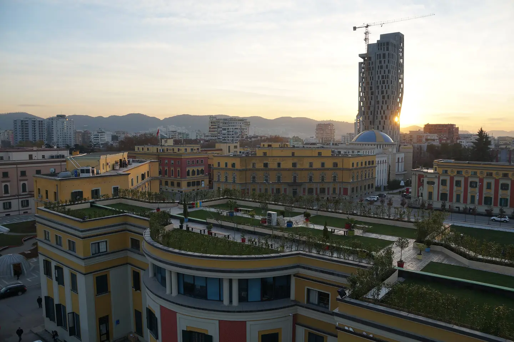
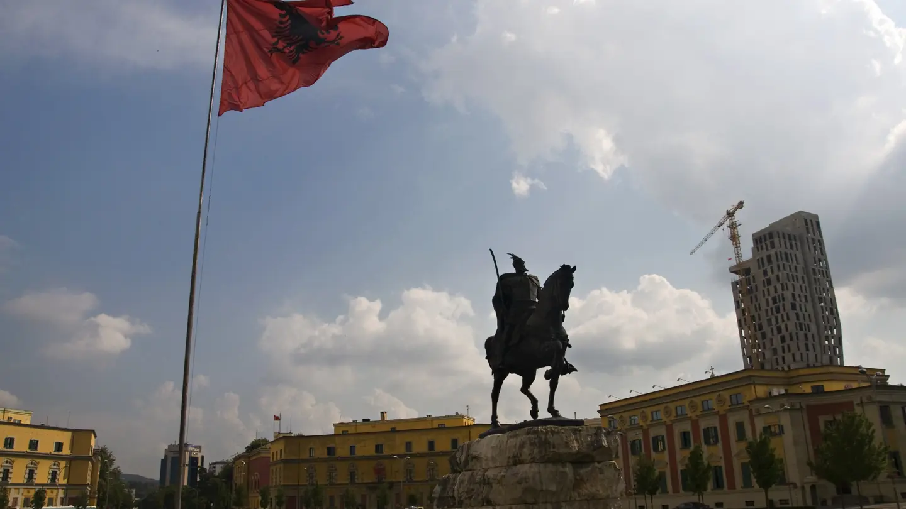
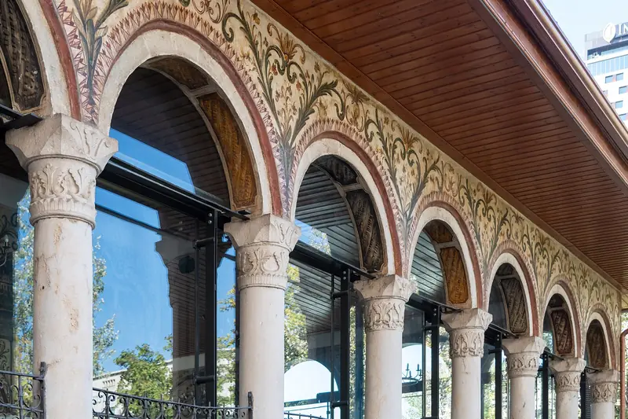
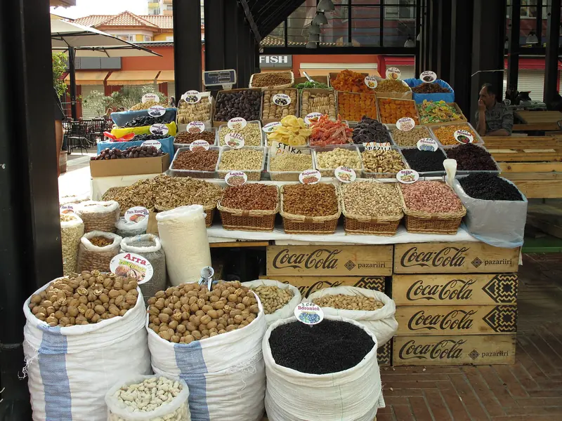

Blue Door
An old house with a garden, a wood stove and a roof terrace, 9 minutes on foot from the New Bazaar.
- 9.4 Hostelworld · 903 reviews
- 4.7 Google · 268 reviews
- checked 22 Oct 2026
In Albanian: Mirë se vini (MEER-uh seh VEE-nee), welcome
The hostel community of Tirana, Albania. Pick a hostel, see its rooms and prices, and book direct. Breakfast is included.

In Albanian: Shtëpi (shtuh-PEE), house
Two houses in the centre, breakfast included in both.
An old house with a garden, a wood stove and a roof terrace, 9 minutes on foot from the New Bazaar.
A villa with a garden off Zogu I Boulevard, 12 minutes on foot from Skanderbeg Square. The volunteers cook Family Dinner every night.
HOSCAR 2026: 3rd in Albania
In Albanian: Çfarë ka sot? (CHFAR-uh kah sot), what's on today?
The week changes with the season and the guests. Longer trips, like three days in the Alps, are on the tours page.
Ask what's on this weekIn Albanian: Miq (MEECH). It's also the word for guests.
Gotta be one of the top hostels of my trip. Only there for one night but was really social and fun, great free breakfast and cheap drinks and staff are all great.
Felt just like home. Perfect hostel for solo travelers. Would definitely stay here again.
Everyone was super nice! Best hostel I stayed in in Albania. Thank you for a wonderful stay with friendly staff
One of my favourite hostels I’ve stayed at. The family dinners are phenomenal and the people there are excellent. Say hello to the turtles!
Amazing hostel, close to everything, great staff, excellent breakfast! I would definitely stay there again!
Absolutely loved that hostel, the volunteers are amazing and it’s just all good vibe !! Found the best place to stay in Tirana !! thanks youuuuu

In Albanian: Tiranë (tee-RAH-nuh)
The capital of Albania. Mountains on one side, buses all day to the sea at Durrës, and a centre you can walk.




In Albanian: Udhëtim (ood-huh-TEEM), a trip
In Albanian: Si të vij? (see tuh VEEJ), how do I get there?
LUNA bus from the airport: every hour, day and night · 400 lek or €4.50, cards OK · 30–40 min
In Albanian: Jemi një grup (YEH-mee nyuh GROOP)
Friends or a team: tell us how many and when.
Ask about a group stay